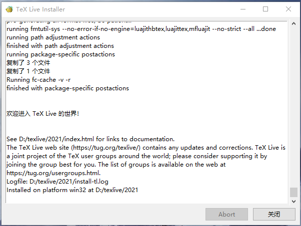
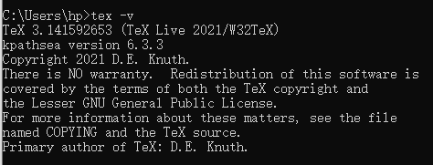

Windows安装Texlive2021
下载texlive
1 | https://mirrors.tuna.tsinghua.edu.cn/CTAN/systems/texlive/Images/ |
右键texlive.iso装载进入虚拟磁盘，运行install-tl-windows.bat，根据需要修改安装路径。
同时还可以修改“Customize”，应为里面有很多用不到的语言，比如说French、German、Japanese、Polish、Korean、Czech(捷克)等，这会少掉很多不必要的语言包。
点击安装，看到以下界面表示安装成功

通过命令行输入tex -v检测环境变量是否配置好

编辑器，我这里用的vscode，安装插件
配置setting.json
参考https://zhuanlan.zhihu.com/p/166523064和https://zhuanlan.zhihu.com/p/362275032
elsarticle模板使用
https://www.elsevier.com/authors/policies-and-guidelines/latex-instructions
普通模板下载
https://ctan.org/tex-archive/macros/latex/contrib/elsarticle
要从*.dtx中提取elsarticle.cls，终端运行：
1 | latex elsarticle.ins |
但后来发现，不需要这个文件在目录下也可以
latex语法
编号标题\section{Conclusion}
不编号标题\section*{Acknowledgments}
上标$S^1$
下标$S_1$
斜体 \emph{}
粗体\textbf{文字}
下划线\underline{文字}
大于号\textgreater、\ge
小于号textless、\le
不等号\ne 、\neq
大于等于
1 | \emph{t}$\ge 2$ |
小于等于
1 | \emph{t}$\le 2$ |
属于$\in$
希腊字母
https://zhuanlan.zhihu.com/p/157644392
1 | $\alpha$ |
加粗希腊字母
1 | \usepackage{amsmath} |
斜体大写希腊字母
1 | \varPhi |
行间公式
1 | \begin{equation} |
行间公式换行，对于长公式，还是直接在mathtype里面换行好直接复制到latex比较方便
1 | \begin{equation} |
行内公式
1 | $XXX$ |
公式引用\eqref{con:eq1}
latex 输入空格
https://blog.csdn.net/luolang_103/article/details/81289529
图片表格
常用选项[htbp]是浮动格式：
『h』当前位置。将图形放置在正文文本中给出该图形环境的地方。如果本页所剩的页面不够，这一参数将不起作用。
『t』顶部。将图形放置在页面的顶部。
『b』底部。将图形放置在页面的底部。
『p』浮动页。将图形放置在一只允许有浮动对象的页面上。
一般使用[htb]这样的组合，只用[h]是没有用的。这样组合的意思就是latex会尽量满足排在前面的浮动格式，就是h-t-b这个顺序，让排版的效果尽量好。
!h 只是试图放在当前位置。如果页面剩下的部分放不下，还是会跑到下一页的。一般页言，用 [!h] 选项经常会出现不能正确放置的问题，所以常用 [ht]、[htbp] 等。（ [ht]用的多）
修改图片标题Figure为Fig.
1 | \usepackage{caption} |
合并多行表格使用multirow，在第一行为其设置值，往后的行空出相应位置
1 | \multirow{2}{*}{0.2/0.8} & HSMM & 126s & 115s & 0.984 & 0.976 & 0.973\\ |
文献
各种引用格式参考
https://blog.csdn.net/colddie/article/details/78554206
https://www.machunjie.com/article/989.html
1 | 引用的文献显示模板 |
作者图片信息
biography，其中pos的值为l或r，代表图片的位置在左边还是右边
1 | \bio[pos=x]{pic.jpg} |
多个作者之间当介绍长短不一时，可能会出现间距太短遮挡住图片，因此可通过调整间距解决
1 | \vspace{40pt} |
单栏 (cas-sc.cls)双栏 (cas-dc.cls)模板使用
模板下载
https://www.ctan.org/pkg/els-cas-templates/
模板使用说明
https://wenda.latexstudio.net/data/ueditor/php/upload/file/20190805/1564935621978907.pdf
下载下来不要直接运行看效果，因为很多内容没填会报错
1 | The key 'stm/author/<options>' is unknown and is being |
此外，什么都填好之后，会报以下错误，但可以编译出文件，但文献无法显示
1 | Missing number, treated as zero. <to be read again> |
这时要检查author是否设置了auid，因为我加上之后就不报错了
1 | \author[1]{XXX}[auid=1] |
文献引用可以正常编译了，但会发现在正文中引用时，所有作者的名字都会列出来，而我们想要
1 | 只有一个作者时，在文中的引用使用（Zhang，2016） |
修改下面这条语句，将longnamesfirst删除，因为longnamesfirst的功能为：多个作者的文献第一次被引用是列出所有作者，以后引用可以缩写为et al.
1 | \usepackage[authoryear,longnamesfirst]{natbib} |
IEEEtran模板使用
注意事项：
THANKS要在author里面，不然会新增一页空白页
1 | \author{ |
IEEEbiography后面加个\vfill，不然作者图片之间间隙很大
1 | \begin{IEEEbiography}[{\includegraphics[width=1in,height=1.25in,clip,keepaspectratio]{./XXX.jpg}}]{Author name} |
加了图片之后似乎要用pdflatex编译，用xelatex会报错